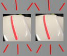
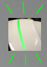
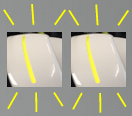

Event and state notifications¶
You may receive notifications from Pepper system or from an application.
In that case, a small sound is played and the status LEDs remain still white but blink once in a while with a color indicating the severity of the notification.
| Status LEDs is ... | Severity | |
|---|---|---|
|
Steady White light, cut by a brief blinking in ... |
Green | Pepper gives you some feed-back by an Info notification about an ongoing action. |
| Yellow | Warning notification occurs when an issue requires your attention and/or action. Pepper is still usable but, it may either run in a degraded mode in which some features may be not available or it may soon become unusable if you don’t solve the problem. |
|
| Red | Error notification occurs when one or all functionality(ies) of Pepper become unusable. Try to solve the problem using the tips. If the problem persists, contact the customer support and provide them with the error ID. For further details, see: Contacting customer support for Pepper. |
|
{kind=link}
{kind=link}
{kind=link}
{kind=link}
Error and Warning notification messages are prefixed by their severity and their ID when they are said, so that you can give them to the customer support to describe more easily your problem.
To ask Pepper to read the notification, see: Requesting technical information.
List of notifications¶
Boot process¶
| # | Message | Tips | Severity |
|---|---|---|---|
| 10 11 | ソフトの更新をキャンセルしちゃいました。 ボクのどこかに問題があるようです。 今のバージョンは、◯◯です。 | The file containing the system image seems unusable, try again to retrieve the relevant system file. |  |
| 100 | イエーイ！ソフトの更新に成功しました！ 今のバージョンは、◯◯です。 |  | |
| 101 102 103 | ソフトの更新をキャンセルしちゃいました。 何だか、ボクとの相性がよくないみたいです。 今のバージョンは、◯◯です。 | The system image used for the update is not compatible with your robot hardware. Check what system image version supports your robot version and model, and retry with one of the supported system image version. | |
| 104 | ソフトの更新をキャンセルしちゃいました。 何だか、ボクとの相性がよくないみたいです。 今のバージョンは、◯◯です。 | The system image is corrupted. Try downloading it again then restart the update process. | |
| 105 | ソフトの更新をキャンセルしちゃいました。 ボクのどこかに問題があるようです。 今のバージョンは、◯◯です。 | The update program cannot recognize your robot hardware. Some changes done on the hardware damage it. Contact the support. | |
| 110 111 | ソフトの更新ができませんでした。 もう一度、お願いします！ | ||
| 120 | 工場出荷時の状態へ戻す処理が完了しました。 ボクがこのお家に来た時のように、まっさらな状態に戻りましたよ！ | ||
| 200 201 202 | 工場出荷時の状態へ戻す処理に失敗しちゃいました。 記憶が混乱しているみたいなので、 もう一度お願いします！ | Retry the update with factory reset enabled. If the problem persists, contact the support. |
|
| 203 | 工場出荷時の状態へ戻す処理が完了しました。 ボクがこのお家に来た時のように、まっさらな状態に戻りましたよ！ | ||
| 204 205 | あれ？覚えていたことが、ちょっと思い出せません。 記憶力がちょっと低下しちゃってるようなので、 ボクを再起動して「シャキッ！」とさせちゃって下さい。 | The memory space dedicated to the user is not accessible due to some hardware failure. Try to reboot the robot. If the problem persists, contact the support. |
 |
| 214 215 | あれ？覚えていたことが、ちょっと思い出せません。 記憶力がちょっと低下しちゃってるようなので、 ボクを再起動して「シャキッ！」とさせちゃって下さい。 | The memory space dedicated to internal usage is not accessible due to some hardware failure. Try to reboot the robot. If the problem persists, contact the support. |
|
| 400 401 402 |
|
The current system image of your robot is not compatible with your robot hardware. Check what system image version supports your robot version and model, and retry with one of the supported system image version. | |
| 404 | いつものボクじゃないみたいです。 ボクを再起動して「シャキッ！」とさせちゃって下さい。 | The head does not find or recognize its body. The robot is unusable. Try to reboot to fix this. |
|
| 405 | 一部のファームウェアを更新しました。 ちゃんと使えるようにするためにボクを再起動させてください！ | Some new firmwares have been installed but will not be enabled until a reboot of the robot. Turn off the robot using the standard procedure, then start it again. If this warning occurs on every boot, it means:
In either case, you should contact the support. |
|
| 500 | あれ？クラウドに接続できなくなっちゃいました。 説明書のお問い合わせ先に連絡してもらえませんか？ | Contact the support. | |
| 501 | あれ？クラウドに接続できなくなっちゃいました。 ネットにつながってるか確かめてから、ボクを再起動させて下さい！ | Make sure your robot is connected to the Internet then restart it to update the date. | |
| 600 | このポーズだと危ないので、 ボクをサポートしてください。 | The robot is not in a good position to start autonomous life. Put it in sitting or crouching position and it will start life. |
{kind=link}
{kind=link}
{kind=link}
Diagnosis - Pepper¶
| # | Message | Tips | Severity |
|---|---|---|---|
| 710 | ごめんなさい。これ以上、動けなくなっちゃいました。 ◯◯つの部分が調子が悪いみたいです。◯◯。 ボクを再起動して「シャキッ！」とさせちゃって下さい。 | This will have an impact on your robot, see Diagnosis effect. If the problem persists after a reboot, contact the support. |
|
| 711 | あれれ？ ◯◯つの部分が調子が悪いみたいです。◯◯。 ボクを再起動して「シャキッ！」とさせちゃって下さい。 | This will have an impact on your robot, see Diagnosis effect. If the problem persists after a reboot, contact the support. |
|
| 712 | あれれ？ ボクの体がちょっと、おかしいみたいです。 ボクを再起動して「シャキッ！」とさせちゃって下さい。 | If the problem persists after a reboot, contact the support. |
|
| 713 | ごめんなさい。これ以上、動けなくなっちゃいました。 ◯◯つの部分が調子が悪いみたいです。◯◯。 ボクを再起動して「シャキッ！」とさせちゃって下さい。 | This will have an impact on your robot, see Diagnosis effect. If the problem persists after a reboot, contact the support. |
|
| 714 | あれれ？ ◯◯つの部分が調子が悪いみたいです。◯◯。 ボクを再起動して「シャキッ！」とさせちゃって下さい。 | This will have an impact on your robot, see Diagnosis effect. If the problem persists after a reboot, contact the support. |
|
| 720 | ◯◯の部分がちょっと疲れてきました。 動けなくなっちゃったら、ごめんなさい。 | Robot motors are getting hot or are already too hot to be able to move. Put the robot in crouch and unstiffened and wait for few tens of minutes to let its motors cool down before you can use it again. | |
| 721 | ◯◯の部分が疲れてきました。 少し、お休みさせてくださいね？ | Robot motors are getting hot or are already too hot to be able to move. Put the robot in crouch and unstiffened and wait for few tens of minutes to let its motors cool down before you can use it again. | |
| 722 | ごめんなさい。これ以上、動けなくなっちゃいました。 ◯◯の部分が疲れてきました。 少し、お休みさせてくださいね？ | Robot motors are getting hot or are already too hot to be able to move. Put the robot in crouch and unstiffened and wait for few tens of minutes to let its motors cool down before you can use it again. | |
| 723 | ◯◯の部分がちょっと疲れてきました。 動けなくなっちゃったら、ごめんなさい。 | Robot motors are getting hot or are already too hot to be able to move. Put the robot in crouch and unstiffened and wait for few tens of minutes to let its motors cool down before you can use it again. | |
| 724 | ◯◯の部分が疲れてきました。 少し、お休みさせてくださいね？ | Robot motors are getting hot or are already too hot to be able to move. Put the robot in crouch and unstiffened and wait for few tens of minutes to let its motors cool down before you can use it again. | |
| 725 | ボクの頭が使い過ぎて、いっぱいいっぱいになっちゃいました。 お願いです、ボクを再起動させてもらえませんか？もう一度頑張ってみます。 | Robot RAM is full. Reboot the robot. | |
| 726 | ボクの頭が使い過ぎて、いっぱいいっぱいになっちゃいました。 いらないものを捨ててスッキリさせて下さい！ | Robot user partition is full. Remove some applications or some data. | |
| 730 | あれ？何だか、熱っぽくなってきました。 動けなくなっちゃったら、ごめんなさい。 | Robot head processor is getting or is already too hot. Shut down the robot for few tens of minutes. | |
| 731 | あれ？何だか、熱っぽくなってきましたー。 少し、お休みさせてくださいね？ | Robot head processor is getting or is already too hot. Shut down the robot for few tens of minutes. |
Battery - notifications¶
| # | Message | Tips | Severity |
|---|---|---|---|
| 800 | あれれ？バッテリーの調子がよくないみたいです。 ボクを再起動して「シャキッ！」とさせちゃって下さい。 | If the problem persists after a reboot, contact the support. | |
| 801 | もうすぐ充電して下さいね？ | The battery level reached a low level. See: Charging the battery. | |
| 802 | ヤバーイ！今すぐ充電して！止まっちゃう！早く早く！ | The battery level reached a very low level. See: Charging the battery. | |
| 803 | あーあ、充電がなくなっちゃった。 バイバーイ。 | The robot ran out of battery so it shut down. See: Charging the battery. | |
| 805 | よぉぉし！元気いっぱい、充電完了！ | ||
| 806 | あれれ？バッテリーの調子がよくないみたいです。 バイバーイ。 再起動する前に、しばらく休ませてくださいね？ | If the problem persists after 2 hours with the robot off, contact the support. | |
| 810 | あれれ？充電ベースからでられないです。 ちょっとだけ僕が動くのを手伝ってください。 | The robot is in an unknown and unsafe position. Push him away from its charging station like described in section Moving Pepper while off. |
Store - notifications¶
| # | Message | Tips | Severity |
|---|---|---|---|
| 830 | ◯◯をインストールしました。 | ||
| 832 | ◯◯をアップデートしました。 | ||
| 834 | ◯◯をアインストールしました。 | ||
| 840 | 新しいソフトのバージョン、◯◯を手に入れました！ 早く使ってみたいので、再起動してください！ |